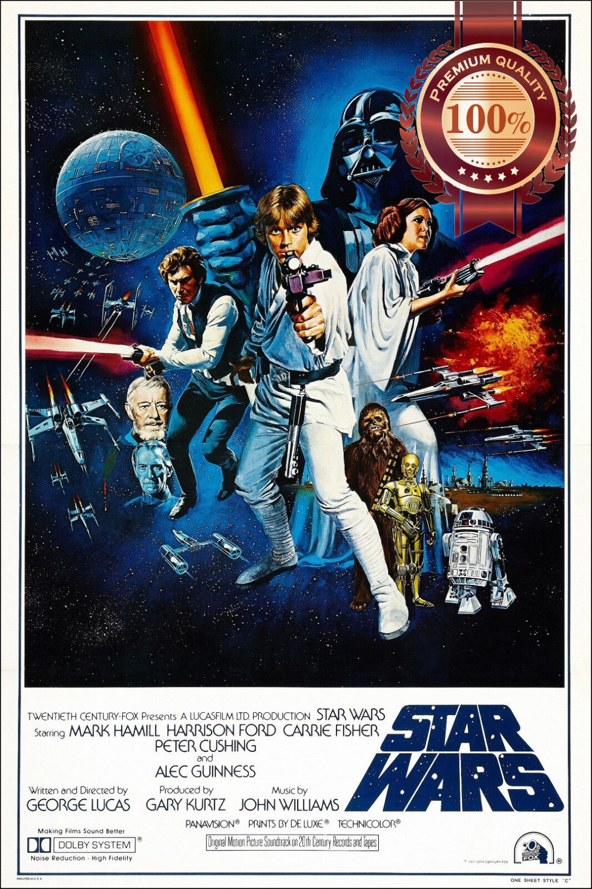
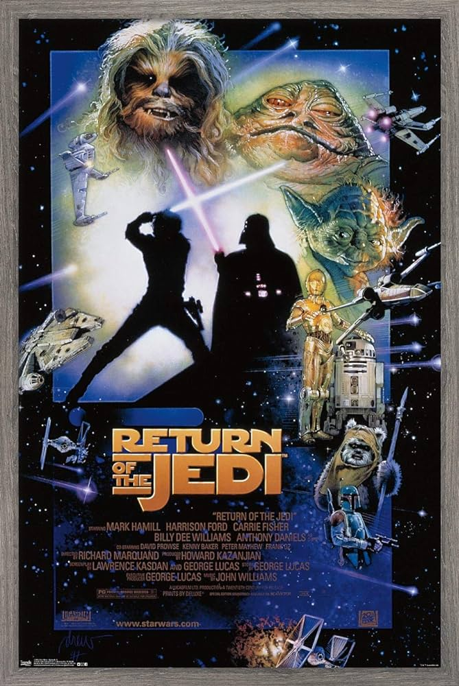

Star Wars Episode IV: A New Hope

Star Wars Episode IV: A New Hope, originally released as Star Wars, is a 1977 film written and directed
by George Lucas. It is the first film in the Star Wars original trilogy.
Luke Skywalker discovers he is the son of Anakin Skywalker and becomes tutored by Jedi Master Obi-Wan
Kenobi.
Star Wars Episode V: The Empire Strikes Back

The Empire Strikes Back is a 1980 American epic space opera film. It is the second film in the Star Wars
film series and the sequel to Star Wars (1977).
The galaxy is in turmoil after the destruction of the Death Star. The Rebel Alliance is on the run from
the tyrannical Galactic Empire.
Star Wars Episode VI: Return of the Jedi

Return of the Jedi is a 1983 American epic space opera film. It is the third installment in the original
Star Wars trilogy, set one year after The Empire Strikes Back.
The mighty Empire is building another Death Star, and the Rebel Alliance must rally to destroy it and
finally bring peace to the galaxy.